Description: Visualisation and analysis of MOM(Manpower Research and Statistics Department) Report on Labour Force in Singapore 2019
Jihun NAM
01-28-2021
1. Overview
The Report on Labour Force in Singapore is an annual report on Singapore’s labour market and it analyses diverse facets of Singapore’s labour force. In this post, the chart 6 “Resident labour force by age) in the original report will be evaluated in terms of”clarity" and “aesthetics”. Then an alternative graphical presentation that represents more easier to understand the context will be presented and discussed.
The explanation above this chart illustrates four big things: (1) the share of residents population, (2) LFPR(Labour Force Prticipation Rate), (3) share of resident labour force, (4) Median age of residents. However, information of (3) and (4) is displayed in the chart and other two are merely stated in words.
Especially, (1) the share of residents population by age is mentioned only with footnotes, so it is difficult to understand and match the other data. Also, LFPR graph is not shown in this chart, so understanding the trend of changes of LFPR is difficult.
2) Missing data for comparison
To compare the data accurately, all the data sets should be ready for use. Closely looking into LFPR data set (Table 5), LFPR of 55 & over age group data does not exist. Therefore, we cannot use the figures of 55 & over age group to compare with the share of residents population. To make all the data sets in the same format, the share of residents population data set should be divided into four age groups, 15-24, 25-54, 55-64, and 65&over.
3) Inappropriate usage of graph
The median age of residents data between two years(2009 and 2019) are being displayed with dotted lines. However, because the figures of median age are continuous values, putting the dotted lines on categorical variables (age groups) is inappropriate.
2.2. Aesthetics
1) Selection of graph
In this chart, line graphs are used to show changes of the share of resident labour force by age. However, it is hard to understand how amounts of the share among the age groups were changed.
2) Highlighting of important message
In order to make readers understand easier, at least this chart needs to highlight important figures to deliever clearer message.
Even the table bellow the line graphs show that the figures of the share of each age group, readers can not easily sum up the figures to evaluate the differences between two fiscal years.
3) Labelling and captions
“June 20xx” labels are inserted multiple times unnecessarily. The duplicated labels can be removed to make the chart much simpler.
“Per Cent” caption should be placed within the graph.
“Source” and “Note” bellow the charts are not aligned, in terms of format.
3. Alternative suggestion of the graph
3.1. Sktechs of graphical presentation and advantages
1) Sketch1 - The share of residents population
The first key message to convey is the change in the share of residents population. Bellow box plot clearly shows that the changes in shares of resident population among the age groups and between two years(2009 and 2019).
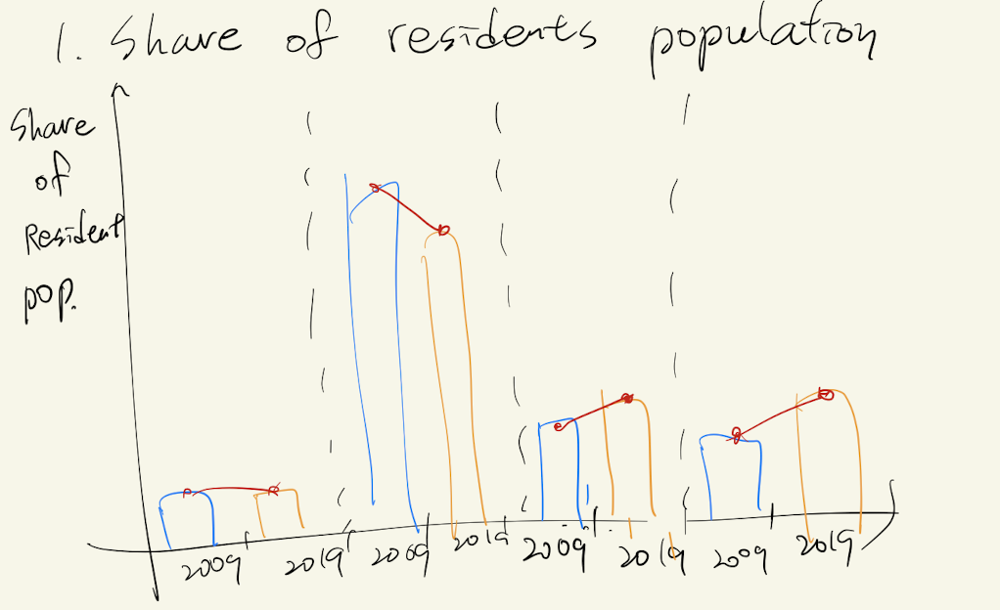Figure1 : Sketch1
2) Sketch2 - LFPR by age
In addition, the second key message to deliver is the change in LFPR (Labour Force Participation Rate). Bellow box plot also clearly displays the changes in LFPR among the age groups and between two years.
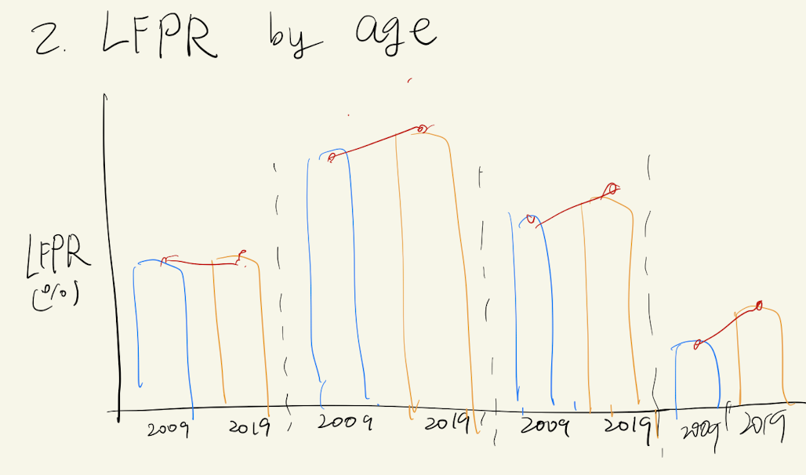Figure2 : Sketch2
3) Sketch3 - The share of resident labour force
The chart bellow Figure3 represents the portion of changes of the share of resident labour force between 2009 and 2019.
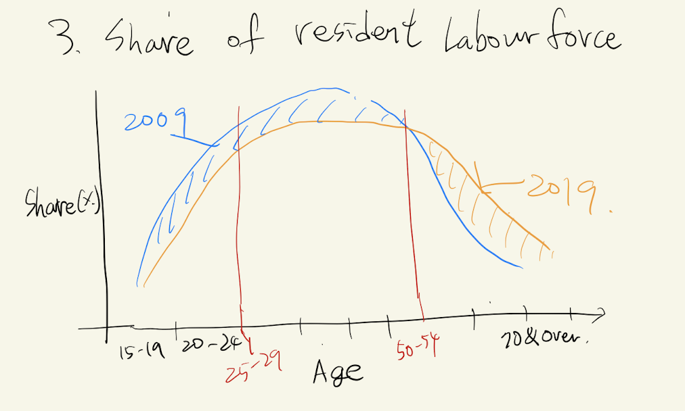Figure3 : Sketch3
4) Sketch4 - Median age of residents
The change of median age of residents in the labour force between 2009 and 2019 can be shown clearer with line graph.
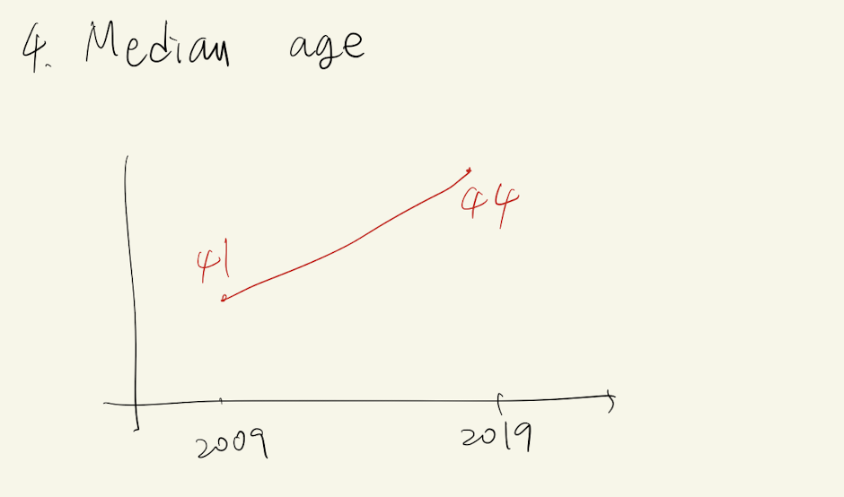Figure4 : Sketch4
3.2. Final dashboard of visualisation using Tableau.
All the charts we designed above were rearranged for one cleaned dashboard 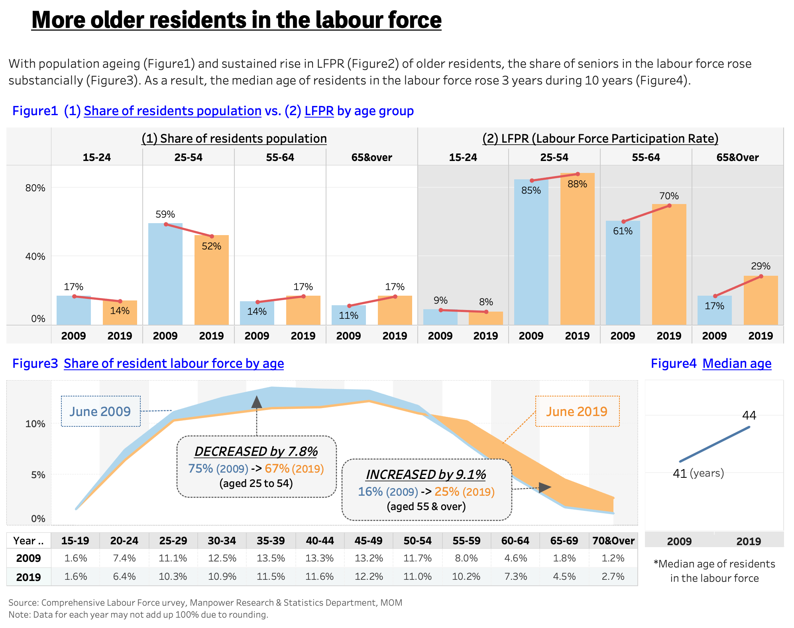 Figure5 : Final Dashboard
4. Step-by-step preparation of visualization
4.1. Preparation for data sets
Data set
Source
1) Resident labour force participation rate by age
Table5 (Resident Labour Force Participation Rate by Age and Sex, 2009 - 2019 (June))
2) The share of resident labor force
Table7 (Resident Labour Force Aged Fifteen Years and Over by Age and Sex, 2009 - 2019 (June))
3) The share of residents population by age
Table7 and Table5 are used for counter-calculation. The population figures are calculated by dividing “Resident labour force(Table7)” by “Resident labour force participation rate(Table5)”
4) The Median age of labour force
Table2 (Key Characteristics of Resident Labour Force, 2009 - 2019)
4.2. Upload integrated data set in Tableau
After pivoting and merging all the data sets using excel, the integrated data set is imported via Tableau
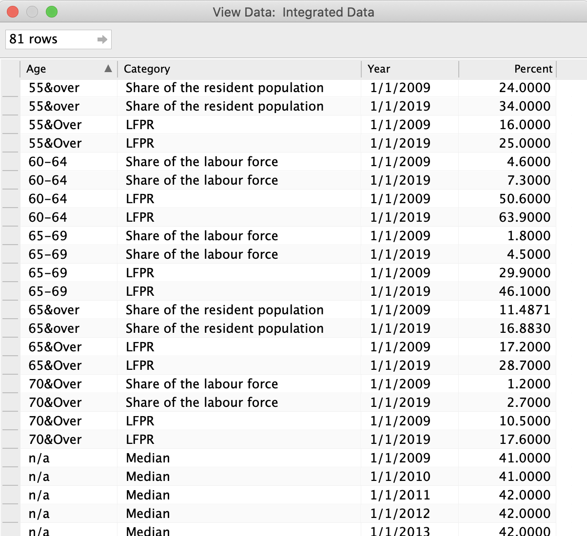Figure6 : integrated dataset
4.3. Creating charts
Next, Tableau’s Polaris was used to create the charts
1) Creating chart of the share of residents population and chart of LFPR by age
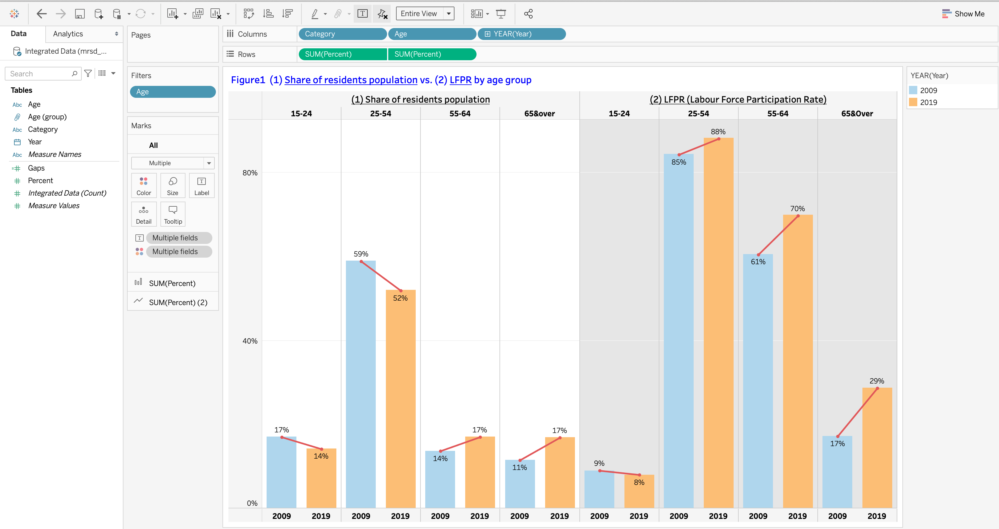Figure7 : Share of residents population and LFPR by age
After adding Category, Age, and Year to Columns, drag and drop Percent(: attribute name of all the figures) to Rows.
Add Age to Filters and check 15-24, 25-54, 55-64, and 65&over.
Drag and drop Year to Marks > Color and change Marks type from Automatic to Bar.
In order to show the differnces between 2009 and 2019 values, drag and drop Percent to Rows and change Marks type to Line. Then select dual axis to combine both charts.
In Marks > SUM(Percent)(2), exclude Year from color and click Color to change line’s color (to red).
Drag and drop Percent to Label to show the values.
2) Creating the chart of the share of resident labour force
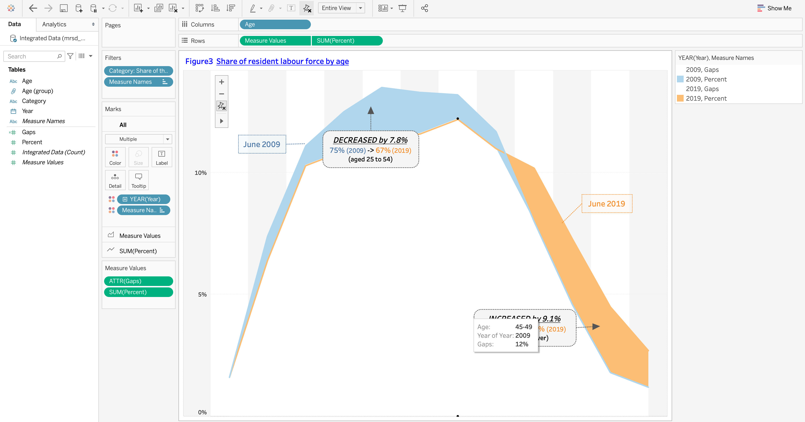Figure8 : Share of residents Labour force by age
After adding Age to Columns, drag and drop Percent to Rows.
Add Category and check “Share of the labour force” only.
Change Marks type to Area and click Analysis > Stack Marks > Off.
Drag and drop Year to color to differentiate between two years.
Create a new calculated field named Gaps and type {Exclude [Year]: MIN([Percent]) }.
Add Gaps to Rows then select dual axis to combine with previous chart.
Click Marks>color and change Gaps to White with 100% opacity.
Add Percent to Rows again with Line graph then select dual axis.
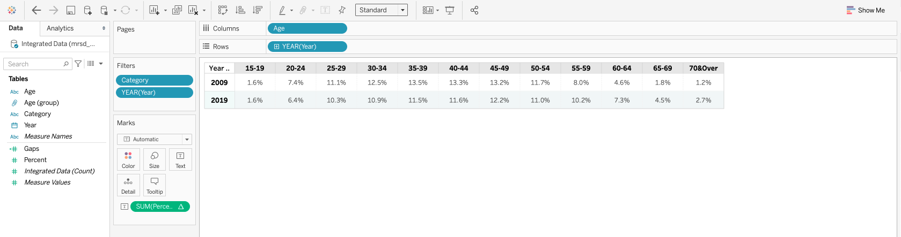Figure9 : Share of residents Labour force by age (table)
After adding creating the share of labour force worksheet, need to creat a new table to show the figures of each age group.
Drag and drop Age to Columns and Year to Rows.
Click Show Me to check Text Tables.
3) Creating the chart of median age of residents
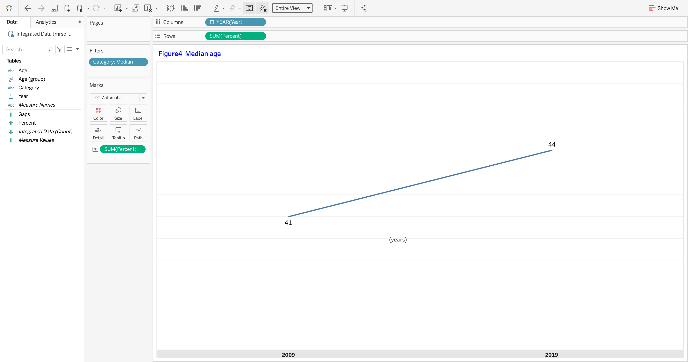Figure10 : Median age of residents
Drag and drop Year to Columns and Percent to Rows.
Fillter Category and check Median only.
Hide and remain only 2009 and 2019 in x-axis.
4) Creating dashboard merging whole charts
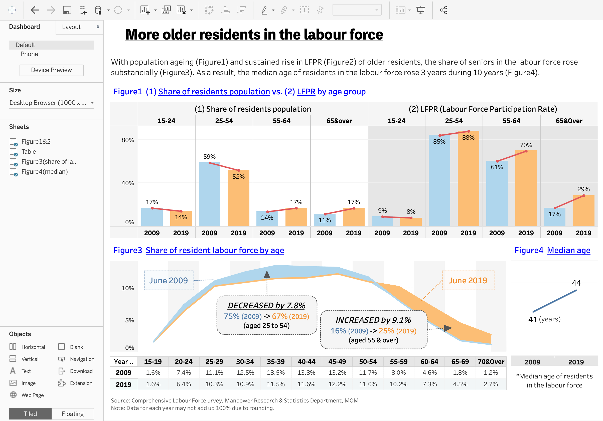Figure11 : Dashboard
Drag and drop Objects>Text on top of the dashboard then type Title and descriptions.
Put all the worksheets that we made on the dashboard and rearrange the size.
5. Major observations
Labour force in Singapore is aging
5.1. Changes of the share of residents population
As illustrated in the statement in original chart, the share of senior population is getting larger than before. The share of residents aged 55-64 and 65&over rose from 14% (2009) to 17% (2019) and from 11% (2009) to 17%(2019), respectively. Whereas, the share of young age groups declined from 59% (2009) to 52% (2019). This fact affects to changes of the share of resident labour force consequently, because the working young population cohorts moving into the senior group.
5.2. Changes of LFPR
Overall LFPR (Labour Force Participation Rate) rose since 2009, however, among 55-64 and 65&over age group’s increments were relatively huge than 25-54 age cohort. Especially, 65&over cohort’s fluctuation was norteworthy, which means that more seniors take part in work activity than 10 years ago. Also, we can assumes that the fact of big changes of LFPR affects to the share of resident labour force.
5.3. Changes of the share of resident labour force
Consequently, this whole report and charts were written to explain that Labour force in Singapore is aging. As seen in the dashboard, 9.1% of the shares of resident labour force in aged 55&over, orange colored part in Figure3, rose from 2009 to 2019. As a result, median age of residents in the labour force rose from 41 years in 2009 to 44 years in 2019.